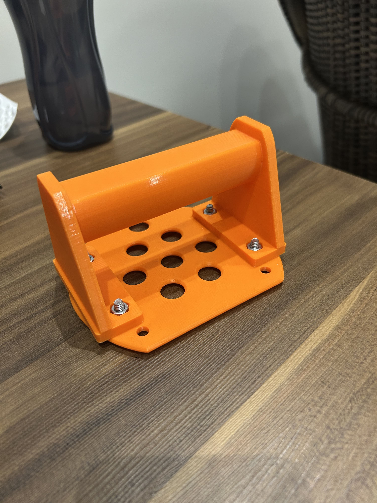
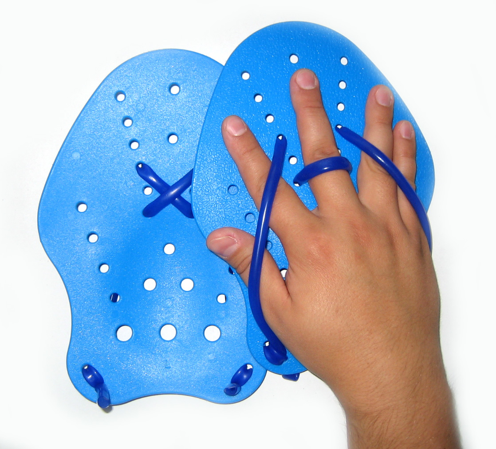
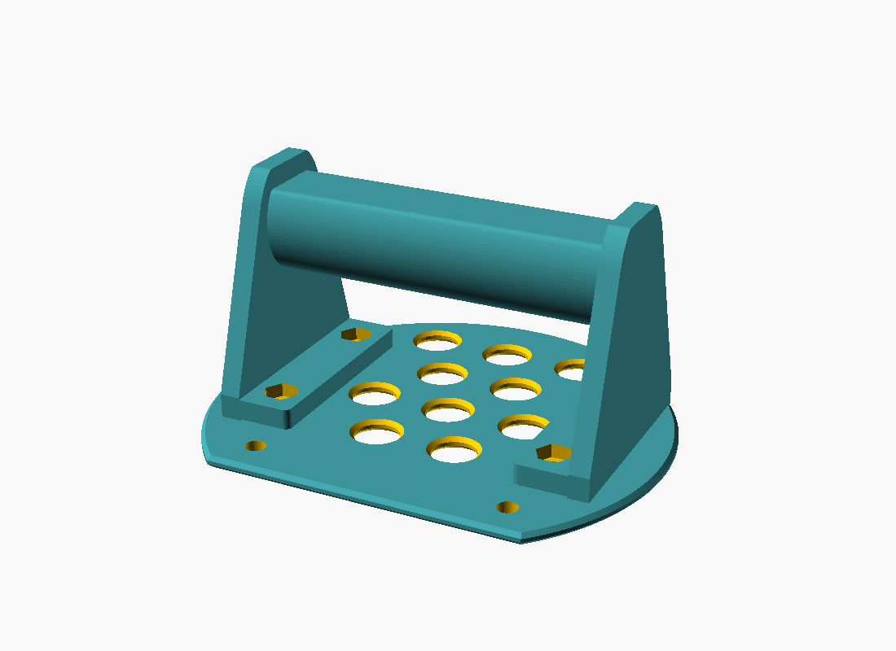
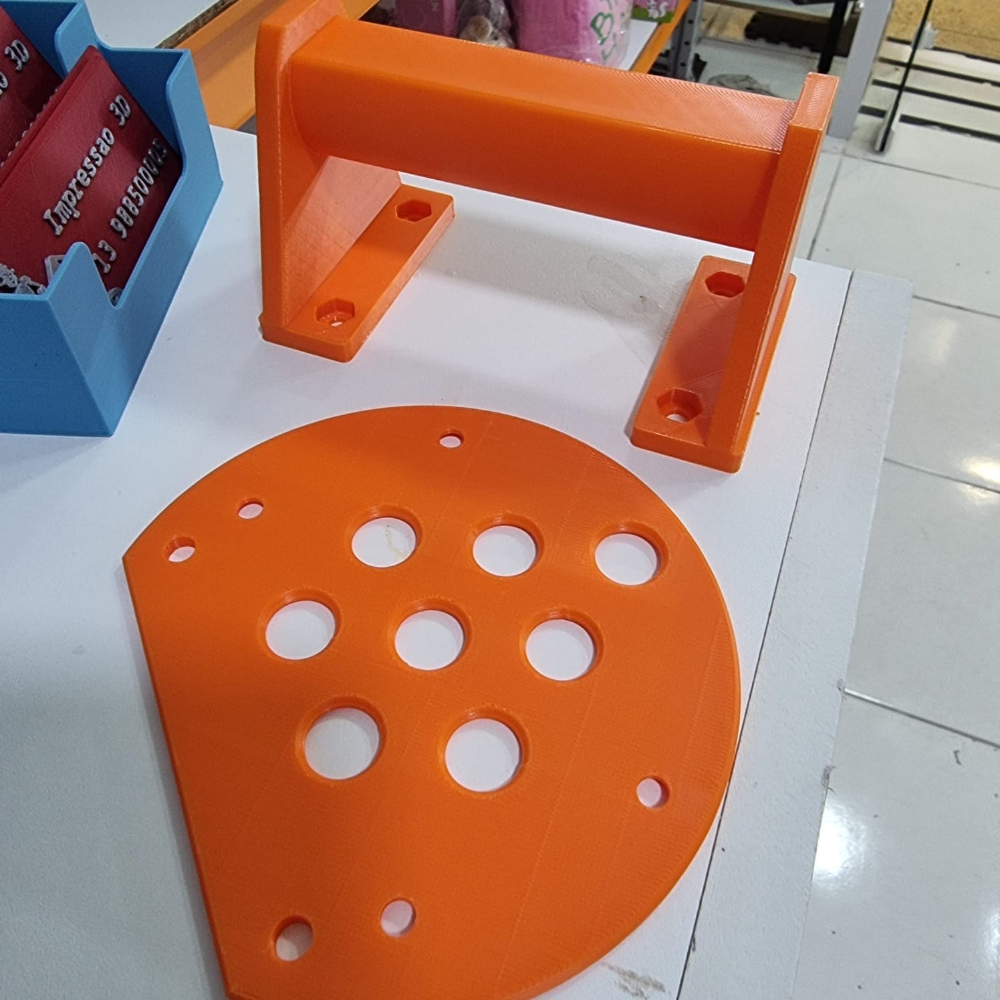

Open-source adaptive equipment
A swim paddle a closed fist can use.
Designed for swimmers with hemiplegia. Spasticity holds the affected hand closed, and a closed fist presents almost no surface to the water. This paddle is laid onto a bar inside the fist rather than gripped — giving back roughly the pushing area of an open hand, without the hand needing to open or to grip.
- Status
- Field tested
- Parts
- 2 printed
- Grip needed
- None

Safety first — read this part
This is an unregulated, home-made device used in water.
- Involve a physiotherapist or OT. Not as a formality — they position the arm to measure the wrist angle the design depends on, and judge whether adding drag to the affected arm is safe. Shoulder subluxation is common on the hemiplegic side.
- Check the skin after every one of the first several sessions, where the palm sits on the bar's flat and where the fingertips press the plate. Reduced sensation is normal on the affected side, so a pressure mark can develop without being felt.
- Never use a closed loop the hand cannot be pulled out of. If you fit a wrist tether, use elastic shock cord so it stretches off under load. Webbing that cinches is the wrong choice here.
- Supervised water only, at least until the swimmer and whoever helps them are confident with donning and removing it quickly.
- This is not a flotation aid and does nothing to keep anyone afloat.
- Start with short sets. Paddles are a well-known route into shoulder trouble even for unimpaired swimmers.

The problem
An ordinary paddle is not an option
After a stroke or brain injury, spasticity commonly holds the hand on the affected side closed. A closed fist presents almost no surface to the water — so little that fist gloves are sold to able-bodied swimmers as a drill to deliberately remove feel for the water.
A conventional hand paddle assumes an open palm and a working grip. It needs the fingers to thread through elastic, the palm to lie flat against the plate, and the hand to hold position against the load. None of that is available.
So the affected arm swims with roughly a wrist's worth of surface area while the unaffected arm swims with a whole hand. This paddle exists to close that gap.
How it works
Follow the load, and the design falls out
The non-obvious part is which side of the fist the plate goes on. It is not a styling choice — it is the whole idea.

-
1
The plate sits on the palm side, past the fingertips
During the pull, water pushes the plate toward the hand.
-
2
That force runs up the struts into the bar
And the bar presses into the palm. The arm resists it directly, through the fist rather than the fingers.
-
3
No grip strength is used for propulsion
The fingers only matter during the recovery, when the arm is out of the water and forces are small — and flexor tone tends to close the fingers around the bar on its own, which for once works in our favour.
Why not the other way round?
Put the plate on the back-of-hand side and every newton of propulsion tries to rip the paddle out of the hand, with grip strength the only thing holding it on. That version works for nobody, and least of all here.
It balances itself
Trimming the wrist edge pulls the plate's area centroid toward the fingertips. If that centroid misses the bar axis, water spends the whole stroke twisting the paddle — unmanageable without grip. The source solves for the offset that lines them up, and re-solves whenever you change a dimension.
Symmetric by design
There is no left or right version. The same files serve either hand, so nobody has to fork the design to mirror it.
In the water
It has been swum, not just rendered
The swimmer it was designed for has used a printed unit successfully. The geometry in the repository is the geometry that worked, not a proposal.
That said: it has been tested by very few people, in one pool, on one hand. Treat the numbers below as a starting point for fitting, not as a specification.
Known-good configuration
- clear_span
- 100
- grip_z
- 32
- grip_y
- 26
- palm_flat
- 20
- standoff
- 45
- plate_dia
- 120
What you print
Two parts, four bolts, an afternoon
The grip module is fitted once to the hand. Plates bolt on and swap, so you can start small and add area only when the stroke and the shoulder can take it.
| Part | File | Time | Notes |
|---|---|---|---|
| Fit gauge | part="gripcheck" | ~1 h | A 44 mm slice of the grip. Build this first. |
| Grip module | grip_module.stl | ~3 h | ≈ 74 g. Supports under the bar only. |
| Plate | 120 / 135 / 150 mm | ~1.5 h | 22–41 g. Bolts on, swappable. Start small. |
Material
PETG or ABS. Not PLA — it softens in a warm pool and creeps under sustained load. Four perimeters minimum; the struts carry everything. 25 % infill is plenty.
Hardware
4 × M5 × 16 A4 stainless countersunk bolts and M5 A4 nyloc nuts. Heads sit flush on the water face; nuts drop into hex pockets, so it assembles with a screwdriver alone. File flush any thread poking above a nut.

Fitting
The workflow that actually matters
The STLs in the repository are one person's fit. The point of the project is the parametric source, so you can make it someone else's.
-
Step 1
Build the fit gauge
Real bar, real span, real palm flat, real standoff — at a fraction of the print time.
-
Step 2
Try it on a table
Check three things: the fist fits the span with the thumb where it naturally falls; the palm settles onto the flat rather than rolling off it; the fingertips clear the plate with a little room. Adjust, reprint, repeat — the loop costs an hour.
-
Step 3
Find the wrist angle
The one parameter you cannot judge from a table top. Have the therapist hold the arm in the catch position with the gauge on, and look at where the plate faces — it should be roughly square to the pull. A spastic wrist usually sits flexed and pronated, so the answer is rarely zero.
-
Step 4
Print the grip module
With
grip_angleset, plus one plate. Start with the smallest. -
Step 5
Swim, then size up
Increase plate area only if the stroke rate holds and the shoulder stays quiet.
-
Comfort
Sleeve the bar
Silicone tube or adhesive neoprene spreads pressure over skin that may not report a problem, and stops layer lines abrading. If you do, subtract twice the sleeve thickness from
grip_zandgrip_ybefore printing.
The parameters that decide fit
| Parameter | What it is | How to find your number |
|---|---|---|
| clear_span | Clear width between the struts | Widest point across the closed fist, thumb included where it lies, plus 8–10 mm |
| grip_z / grip_y | Bar oval, toward the plate / fore-aft | The natural aperture inside the resting fist. Too large and the hand will not go on |
| palm_flat | Width of the flat the palm seats on | 20 mm suits most hands. Larger keys the angle harder; 0 removes it |
| standoff | Plate face to bar axis | Bar axis to the outermost point of the curled fingers, plus 8–12 mm |
| grip_angle | Hand tilt relative to the plate | Measured on the swimmer in the catch position. Positive raises the wrist end |
Full reference, print settings and a troubleshooting table are in the README.
Build it yourself
Everything is parametric
Open fist_paddle.scad
in OpenSCAD. Everything above the [Hidden] marker is meant to be edited.
F5 to preview, F6 for the real render, then export — always F6 before exporting, or you can get a broken mesh.
# the fitted part
openscad -o grip_module.stl \
-D 'part="grip"' fist_paddle.scad
# a pushing surface, any diameter
openscad -o plate_135mm.stl \
-D 'part="plate"' \
-D 'plate_dia=135' fist_paddle.scad
# the fit gauge — build this first
openscad -o grip_fit_gauge.stl \
-D 'part="gripcheck"' fist_paddle.scadContributing
What this design lacks is data
The most useful contribution is a fitting report: hand dimensions, the parameter values that worked, and what you had to change. Photographs of the device in use, with consent, help more than renders.
If you are a clinician and something here is wrong, please open an issue.
An honest limitation
This is an unregulated device that goes on a disabled person's arm in water. It was engineered from first principles, not from clinical practice, and it has been tested by very few people. It works for the swimmer it was built for. Whether it works for anyone else is genuinely an open question — which is why the source, and not the STLs, is the deliverable.